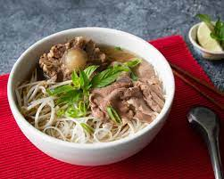

Pho

Ingredients :
- Marrow bones and Meaty bones
- Thinly sliced raw meat
- Yellow onions
- Whole garlic
- Fresh ginger
- Whole spices: star anise, cloves,
cinnamon sticks, black cardamom pods, fennel seeds, coriander seeds
- Salt
- Fish sauce
- Sugar
- Dried noodles/Rice noodles
Steps :
- Pick a large enough bowl.
- Add your pre-cooked noodles
- Raw meat next
- Add the broth (must be super hot)
- Garnish it with Fresh mint, Sprigs of Thai basil,
Fresh cilantro, Green onions (scallions), Sliced white or red onion,
Fish sauce, or whatever you like